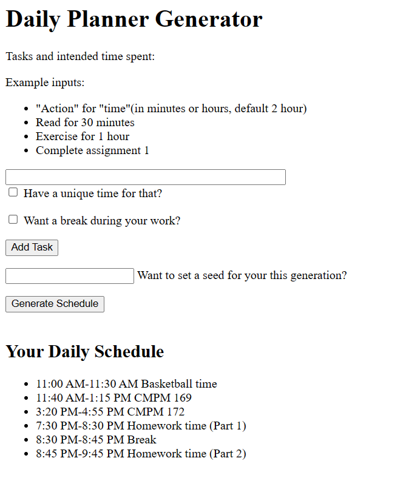
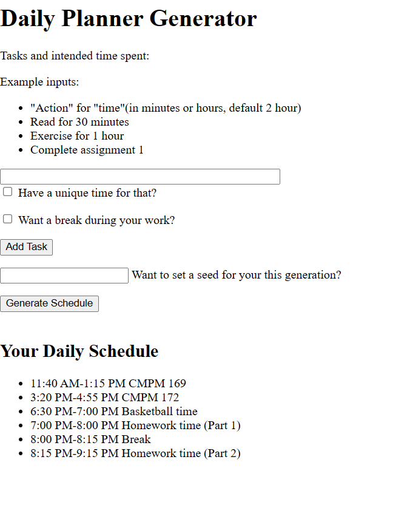

Generator assignment
Name: Xing Zhong
Notes:
The a priori for this project is the planning itself. Contains basic features and structural elements such as date information, time period, and sections.
The general daily planner prior starter I used that created by Chatgpt:
link to the priori
Description:
By default, the generator will randomly layout based on the tasks you add. Of course, you can also set it to a fixed time.
In addition, users can modify the seed for random task times. After completion, players can also download the schedule.
Meets additional challenges:
- Challenge 2: Providing users with the ability to download generated schedules in cvs form
- Challenge 3: Using seeds to manipulate the random.
link to the actual generator
Example of schedules:

